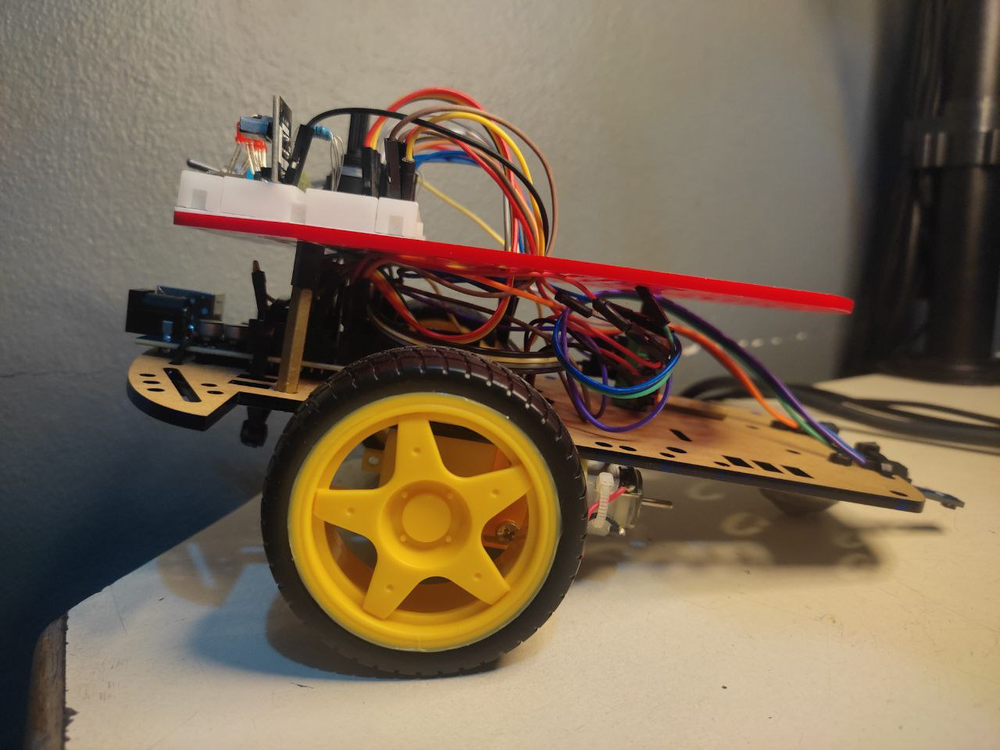

Carrito basado en Microcontrolador
Jun 13, 2023
Para este proyecto se tenía como desafío desarrollar un carrito basado en Microcontrolador que cumpla con los siguientes modo:
Requerimientos Generales
- Modo 1: En espera (STANDBY).
- Modo 2: Avanza 2 segundos y se detiene, luego repite.
- Modo 3: Carrito Seguidor de Línea (Requiere de Pista con Línea Negra).
- Modo 4: Avanza en Zig Zag.
- Modo 5: Avanza en circulo hacia atrás.
